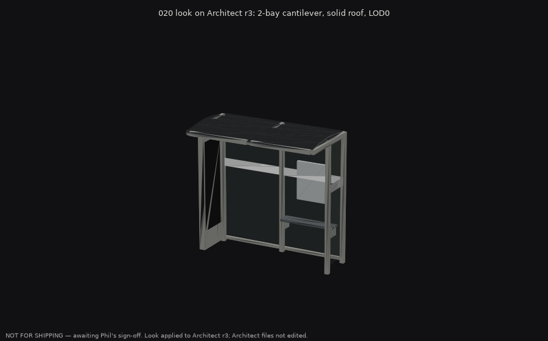
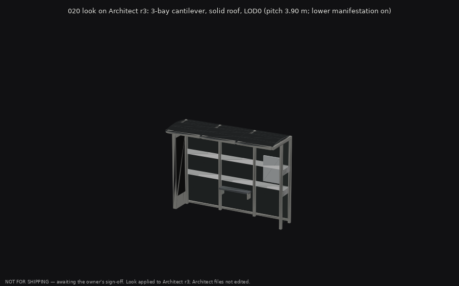
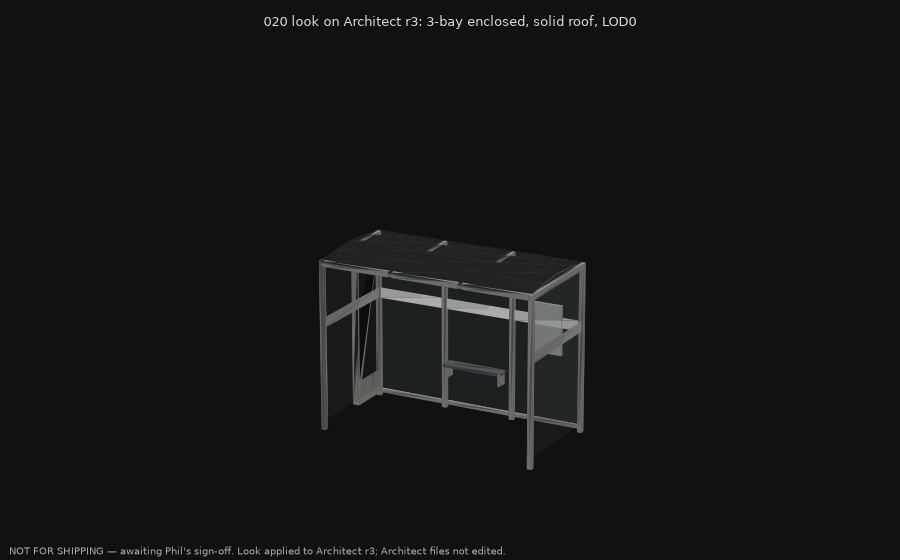
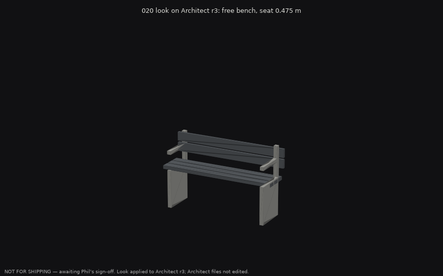
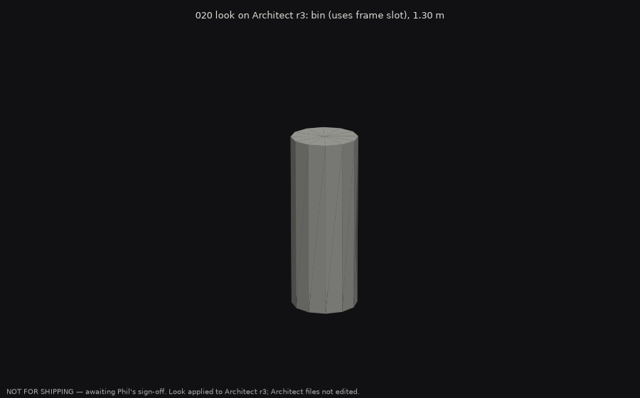
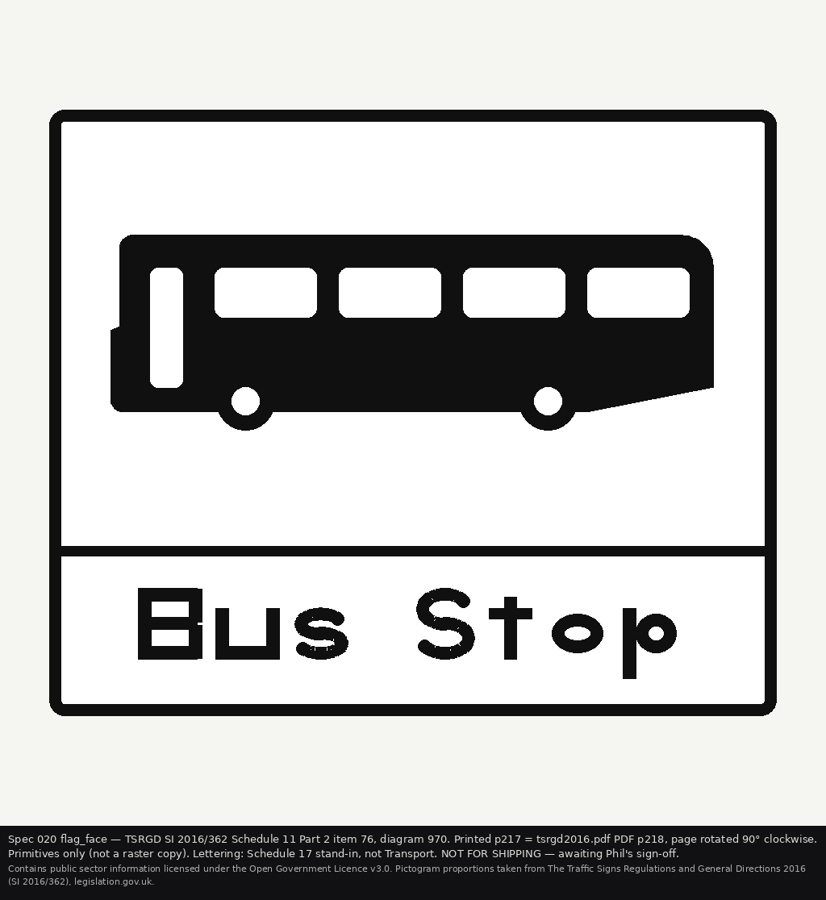
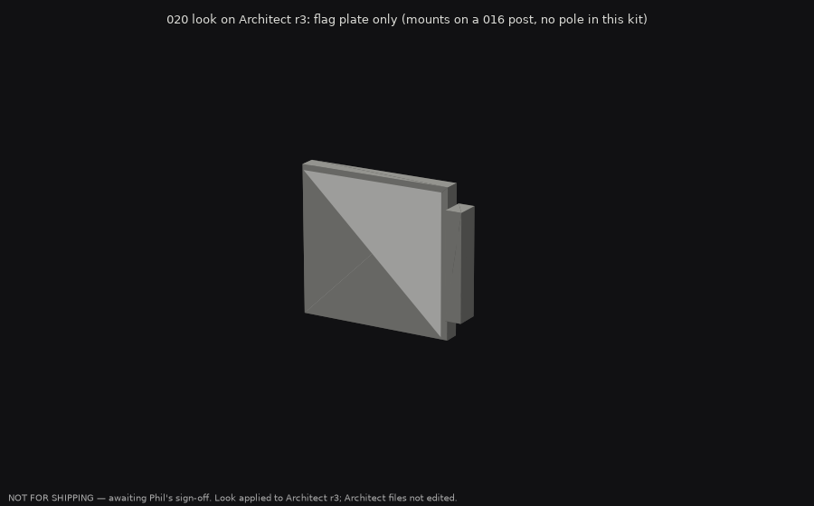
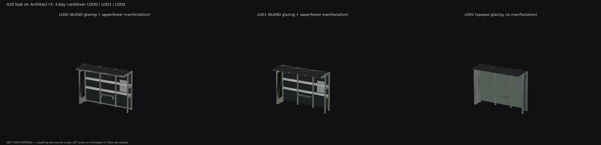
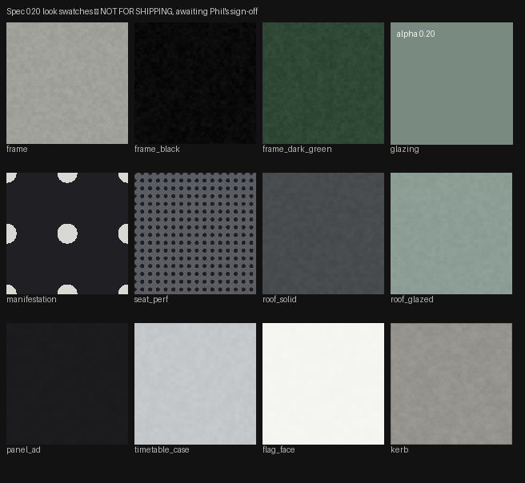

look-pack: Bus stop look pack (materials and textures)
Pending sign-off NOT FOR SHIPPING: awaiting the owner's sign-off (LOOK.md).
Art's materials, procedural textures and previews on Architect's modules.










| Id | look-pack |
|---|---|
| Name | Bus stop look pack (materials and textures) |
| Category | 3D street furniture |
| Group | Art look pack (Spec 020) |
| Spec | 020 |
| Bind | material slot name on the kit / GLB |
| Colourways | frame, frame_black, frame_dark_green |
| Diagram ref / source page | Art look pack, kit/street_furniture/bus_stop/look/ (LOOK.md, PROVENANCE.md). Previews are Art's existing images (copied, not re-rendered). |
| Licence | Original procedural (intended CC0 once signed off, PROVENANCE.md); flag face 970: original construction + OGL v3.0 |
Materials (materials.json)
| Slot | Name | Base colour | Verified |
|---|---|---|---|
flag_face | Bus-stop flag face (TSRGD diagram 970) | [1.0, 1.0, 1.0, 1.0] | U |
frame | Powder-coat silver-grey (RAL 9006-like) | [0.6314, 0.6314, 0.6118, 1.0] | U |
frame_black | Powder-coat black (RAL 9005-like) | [0.0392, 0.0392, 0.0392, 1.0] | U |
frame_dark_green | Powder-coat dark green (BS 4800 14 C 39-like / holly green) | [0.1843, 0.2824, 0.2118, 1.0] | U |
glazing | Green-grey tinted glazing | [0.4784, 0.549, 0.502, 0.2] | U |
kerb | Kerb / footway edge (look only, not a 020 kit slot) | [0.5882, 0.5804, 0.5569, 1.0] | U |
manifestation | Glazing manifestation dot band | [1, 1, 1, 1] | U |
panel_ad | Advertising panel — blank in the shipped game | [0.1098, 0.1098, 0.1176, 1.0] | U |
roof_glazed | Glazed / polycarbonate roof | [0.549, 0.6196, 0.5882, 0.35] | U |
roof_solid | Solid painted metal roof | [0.2824, 0.298, 0.3059, 1.0] | U |
seat_perf | Perforated steel seat (texture holes, not geometry) | [0.3529, 0.3686, 0.3843, 1.0] | U |
timetable_case | Timetable case (aluminium frame, dark glazed door) | [0.7686, 0.7843, 0.7922, 1.0] | U |